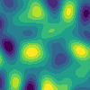

TODO
Example
TODO
library(opensimplex2)
library(ggplot2)
#> Warning: package 'ggplot2' was built under R version 4.5.2
library(gganimate)
#> Warning: package 'gganimate' was built under R version 4.5.2
## Create simplex noise in 3 dimensions:
arr <- opensimplex_noise("S", 100, 100, 100, frequency = 1.5)
## Convert array to data.frame with dimensions as columns:
arr.df <- as.data.frame(which(arr == arr, arr.ind = TRUE))
arr.df$value <- arr[as.matrix(arr.df)]
## Plot the noise with first two dimensions on x- and y-axis.
## The third dimension is used as transition in an animation
ggplot(arr.df, aes(x = dim1, y = dim2, fill = value)) +
geom_tile() +
theme_void() +
theme(plot.margin = margin(0, 0, 0, 0, "pt"),
legend.position = "none") +
coord_fixed() +
scale_x_continuous(expand = c(0, 0)) +
scale_y_continuous(expand = c(0, 0)) +
scale_fill_binned(limit = c(-1, 1), palette = "viridis", n.breaks = 10) +
transition_states(dim3)
#> Rendering [>--------------------------------------------] at 11 fps ~ eta:
#> 8sRendering [=>------------------------------------------] at 9.7 fps ~ eta:
#> 9sRendering [=>-------------------------------------------] at 10 fps ~ eta:
#> 9sRendering [==>------------------------------------------] at 11 fps ~ eta:
#> 8sRendering [===>-----------------------------------------] at 12 fps ~ eta:
#> 7sRendering [====>----------------------------------------] at 12 fps ~ eta:
#> 7sRendering [=====>---------------------------------------] at 12 fps ~ eta:
#> 7sRendering [=====>---------------------------------------] at 13 fps ~ eta:
#> 6sRendering [======>--------------------------------------] at 13 fps ~ eta:
#> 6sRendering [=======>-------------------------------------] at 13 fps ~ eta:
#> 6sRendering [========>------------------------------------] at 13 fps ~ eta:
#> 6sRendering [=========>-----------------------------------] at 13 fps ~ eta:
#> 6sRendering [==========>----------------------------------] at 13 fps ~ eta:
#> 5sRendering [===========>---------------------------------] at 13 fps ~ eta:
#> 5sRendering [============>--------------------------------] at 13 fps ~ eta:
#> 5sRendering [=============>-------------------------------] at 13 fps ~ eta:
#> 5sRendering [==============>------------------------------] at 13 fps ~ eta:
#> 5sRendering [===============>-----------------------------] at 13 fps ~ eta:
#> 5sRendering [================>----------------------------] at 13 fps ~ eta:
#> 5sRendering [================>----------------------------] at 13 fps ~ eta:
#> 4sRendering [=================>---------------------------] at 13 fps ~ eta:
#> 4sRendering [==================>--------------------------] at 13 fps ~ eta:
#> 4sRendering [===================>-------------------------] at 13 fps ~ eta:
#> 4sRendering [====================>------------------------] at 13 fps ~ eta:
#> 4sRendering [=====================>-----------------------] at 13 fps ~ eta:
#> 4sRendering [======================>----------------------] at 13 fps ~ eta:
#> 4sRendering [======================>----------------------] at 13 fps ~ eta:
#> 3sRendering [=======================>---------------------] at 13 fps ~ eta:
#> 3sRendering [========================>--------------------] at 14 fps ~ eta:
#> 3sRendering [========================>--------------------] at 13 fps ~ eta:
#> 3sRendering [=========================>-------------------] at 13 fps ~ eta:
#> 3sRendering [==========================>------------------] at 13 fps ~ eta:
#> 3sRendering [===========================>-----------------] at 13 fps ~ eta:
#> 3sRendering [============================>----------------] at 13 fps ~ eta:
#> 3sRendering [============================>----------------] at 13 fps ~ eta:
#> 2sRendering [=============================>---------------] at 13 fps ~ eta:
#> 2sRendering [==============================>--------------] at 13 fps ~ eta:
#> 2sRendering [===============================>-------------] at 13 fps ~ eta:
#> 2sRendering [================================>------------] at 13 fps ~ eta:
#> 2sRendering [=================================>-----------] at 13 fps ~ eta:
#> 2sRendering [==================================>----------] at 13 fps ~ eta:
#> 2sRendering [===================================>---------] at 13 fps ~ eta:
#> 1sRendering [====================================>--------] at 13 fps ~ eta:
#> 1sRendering [=====================================>-------] at 13 fps ~ eta:
#> 1sRendering [======================================>------] at 13 fps ~ eta:
#> 1sRendering [=======================================>-----] at 13 fps ~ eta:
#> 1sRendering [========================================>----] at 13 fps ~ eta:
#> 1sRendering [=========================================>---] at 13 fps ~ eta:
#> 1sRendering [=========================================>---] at 14 fps ~ eta:
#> 0sRendering [==========================================>--] at 14 fps ~ eta:
#> 0sRendering [===========================================>-] at 13 fps ~ eta:
#> 0sRendering [============================================>] at 13 fps ~ eta:
#> 0sRendering [=============================================] at 13 fps ~ eta: 0s
Acknowledgments
This package wraps the C-code by https://github.com/MarcoCiaramella/opensimplex2, which in turn is a translation of the original Java code by https://github.com/KdotJPG/OpenSimplex2.
Code of Conduct
Please note that the opensimplex2 project is released with a Contributor Code of Conduct. By contributing to this project, you agree to abide by its terms.